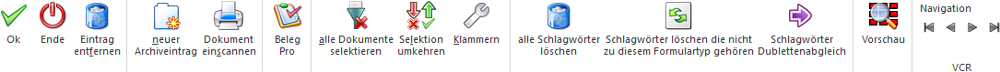
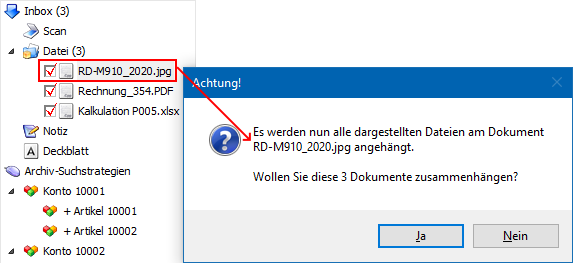

In jeder Applikation der WinLine START kann der Import von externen Dokumenten in das WinLine Archiv über den Menüpunkt..
1 CRM
1 Neuer Archiveintrag
.. erfolgen. Damit nach den neuen Archiveinträgen im Anschluss einfach gesucht werden kann, können den jeweiligen neuen Einträgen Schlagwörter zugeordnet und mit einem Wert versehen werden.
Beispiel
Eine Rechnung (Rechnungsnummer "2020FA657") soll archiviert werden. Damit später über die Rechnungsnummer nach dem Archiveintrag gesucht werden kann, wird der Rechnung das Schlagwort "022 - Fakturennummer" zugeordnet und in dem Schlagwort die Nummer "2020FA657" hinterlegt.

Der Fenster "Neuer Archiveintrag" gliedert sich wie folgt auf, wobei eine detaillierte Erläuterung in den nachfolgenden Kapiteln erfolgt:
ü Bereich "Archiv - Suchstrategien"
Buttons

Ø Ok
Durch Drücken des Buttons "Ok" bzw. der Taste F5 wird das Dokument, bzw. werden die Dokumente archiviert.
Ø Ende
Durch Drücken des Buttons "Ende" wird das Fenster geschlossen und alle nicht archivierten Dokumente verworfen.
Ø Eintrag entfernen
Durch Anklicken des Buttons "Eintrag entfernen" werden all jene Dokumente entfernt, bei denen die Checkbox aktiviert ist oder auf dem der Fokus liegt.
Ø neuer Archiveintrag
Mit dem Button "neuer Archiveintrag" wird je nach aktuell gesetztem Fokus entweder die Windows-Ordnerübersicht (zum Übernehmen eines neuen Archiveintrags) geöffnet oder eine Notiz bzw. ein Deckblatt erzeugt.
Ø Dokument einscannen
Durch Anwahl dieses Buttons wird automatisch die entsprechende Software des installierten Scanners geöffnet. Das Ergebnis des Scan's wird anschließend automatisch an die WinLine übergeben.
Hinweis
Ist in den Archivparametern die Checkbox "Etikettendruck vor dem Scannen" aktiviert, dann können an dieser Stelle Archiv-Etiketten gedruckt werden (siehe dazu Archivetiketten).
Ø Beleg Pro
Durch Anwählen dieses Buttons wird der Wizard des Belegeingangsmoduls angestoßen. Dabei kann ein neuer Archiveintrag - es muss sich dabei um eine PDF-Datei handeln - via Beleg Pro analysiert und weiterverarbeitet werden. In weiterer Folge können dadurch unterschiedliche Aktionen, wie z.B. eine Buchungserstellung (der Beleg wird analysiert und daraus wird eine Buchung für WinLine FIBU erstellt) oder eine Belegerstellung (der Beleg wird analysiert und daraus wird ein Beleg für WinLine FAKT / Einkauf erstellt), mit den Dokumenten ausgeführt werden. Weitere Informationen können dem Kapitel Beleg Pro - Wizard im WinLine START-Handbuch entnommen werden.
Ø alle Dokumente selektieren
Mit diesem Button kann die Checkbox vor allen Dokumenten in der "Inbox" aktiviert werden.
Ø Selektion umkehren
Mit dem Button "Selektion umkehren" können die Checkboxen der Dokumente aus der Inbox umgekehrt werden. D.h. aktivierte Checkboxen werden deaktiviert und nicht gesetzte Checkboxen aktiviert.
Ø Klammern
Mit dem Button "Klammern" können 2 oder mehr Archivdokumente zu einem Eintrag zusammengefasst werden. Die Bestimmung, welche Dokumente geklammert werden sollen, erfolgt durch Aktivieren der Checkboxen vor den Archivdokumenten.
Dabei ist die Reihenfolge der Klammerung (d.h. welches Dokument an welches geklammert wird) abhängig davon, welches Dokumente in der Inbox an oberster Position steht.

Die Beschlagwortungen für die einzelnen Formulare bleiben dabei weiterhin erhalten (sofern sie unterschiedlich sein sollten). Das Klammern wird vor allem dann benötigt, wenn mehrere Seiten eines Dokuments eingescannt und gemeinsam verwaltet werden sollen.
Hinweis
Wurden keine Dokumente durch Anwahl selektiert und der "Klammern"-Button gedrückt, so erfolgt eine entsprechende Hinweismeldung.
Ø alle Schlagwörter löschen
Bei Anwahl dieses Buttons werden alle Schlagwörter (durch den Formulartyp vorbelegte und manuell hinzugefügte Schlagwörter) gelöscht.
Ø Schlagwörter löschen, die nicht zu diesem Formulartyp gehören
Durch Anwählen dieses Buttons werden alle Schlagwörter entfernt, welche nicht in dem gewählten Formulartyp zugeordnet sind.
Ø Schlagwörter Dublettenabgleich
Enthält ein Dokument identische Beschlagwortungen (Schlagwort + Wert), so können diese mittels "Schlagwörter Dublettenabgleich" automatisch entfernt werden.
Ø Vorschau
Durch Anwahl dieses Buttons wird die Dokumenten-Vorschau aktiviert, in welcher die einzelnen Archivdokument betrachtet werden können.
Hinweis
Ob die Vorschau aktiviert ist oder nicht wird benutzerspezifisch abgespeichert.
Ø VCR-Buttons
Mit den VCR-Buttons kann zwischen den einzelnen Dokumenten / Dateien geblättert werden.